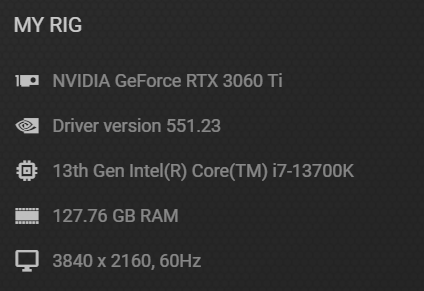
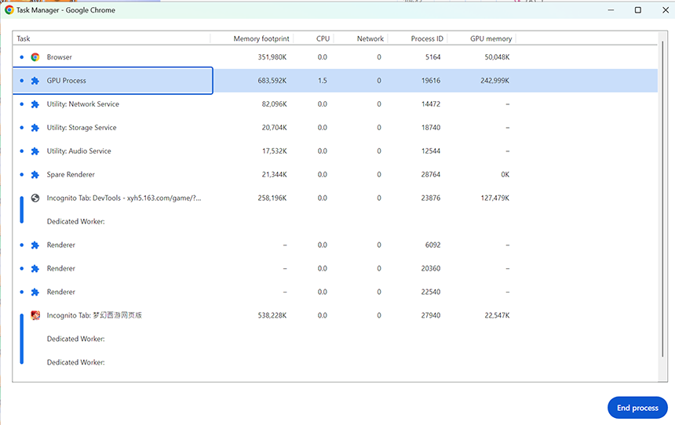
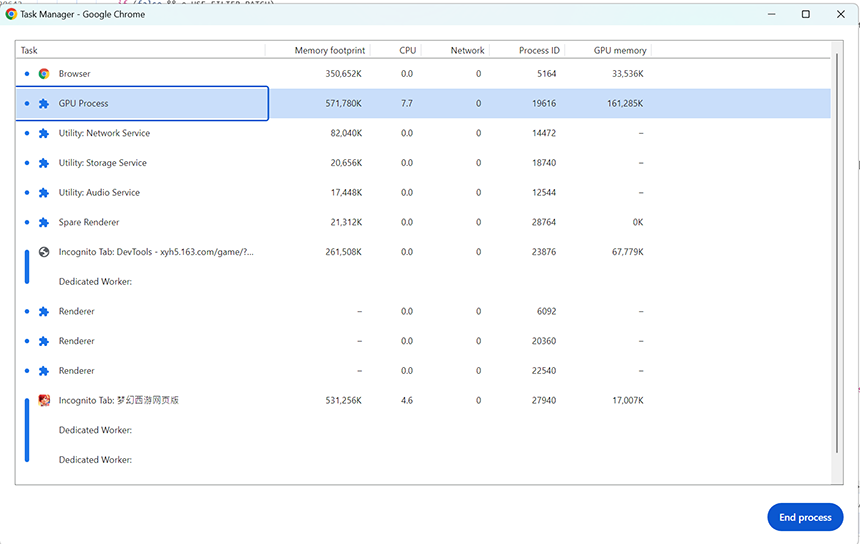
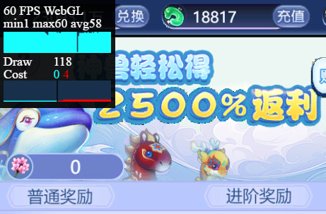
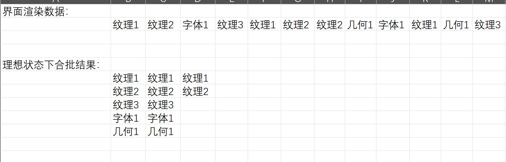
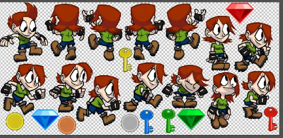
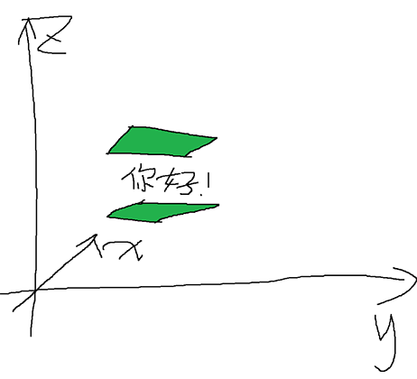

DrawCall和合批渲染
“Draw Call”（绘制调用）和 “Batch Rendering”（合批渲染）都是与图形渲染和图形编程相关的概念，通常在游戏开发和图形应用程序中被讨论。
前言
游戏开发领域中，DrawCall 指的是调用图形接口，将图形数据传递到 GPU，并让 GPU 执行渲染指令的过程。简而言之，调用一次图形接口执行渲染操作就算作一次 DrawCall。然而，过多的 DrawCall 会引起性能下降。接下来通过白鹭引擎的H5游戏作为示例，介绍一下 DrawCall 相关细节以及优化方法。
某种程度上，我们可以把 CPU 设备和 GPU 区分开来，当成两个设备。这两个设备可以通过某种线路（比如 X86 PC 上的 PCIE 总线）进行通信。因为它们是两个独立的设备，所以 GPU 并不能直接访问到 CPU 设备方面的内存（就独立显卡来说），要调用 GPU 执行渲染，就需要由 CPU 提供渲染数据和配置给 GPU。CPU 以不同的组织方式和频率提交数据，带来的效率也不一样。
可以想象，CPU 要调用一次 GPU 进行渲染的过程并不轻松，对于 WebGL 来说，过程大致如下：
- JavaScript 程序生成、检查和配置渲染数据，整理好后传递给 WebGL API。
- WebGL API 设置好上下文执行环境，调用到浏览器内核中图像相关 API，把数据传给操作系统 API。
- 调用操作系统 API 时触发系统调用，切换到内核态运行环境。
- 在内核态运行环境中调用驱动接口，传递数据并让 GPU 执行渲染操作。
可以肯定的是，这个过程会占用大量 CPU 资源，在 DrawCall 频率过高的情况下，不管 GPU 能否满足性能需求，这个过程都会导致大量 CPU 资源被消耗掉。
而 GPU 面对的情况却不一样，GPU 对于 CPU 是否会把数据分成多次传递，并不会太过关心，GPU 在意的是接收到的渲染指令序列是否“相似或相同”，因为 GPU 进行渲染，需要很多数据相关的上下文，包括相同的顶点、纹理、材质、着色器程序、混合模式等，一旦这些数据发生更改，就会导致 GPU 需要切换状态，刷新渲染管线。举个例子：一条生产折叠自行车的流水线要改成生产山地车，可能不用怎么修改就能马上生产，但是生产折叠自行车的流水线要改成生产电视机，那应该有大量的模块和流程需要修改，成本极高。因此，把相似的渲染指令合并在一起提交，通过降低 DrawCall 次数以及有效组织渲染指令的序列，能有效地降低 CPU 和 GPU 的计算成本。
这里我们再补充一个概念：‘批’。‘批’ 是指 CPU 一次性提交给 GPU 的数据。更严格地说，在合批优化中，相同或者相似的数据紧密地组织在一起，这样称为"一批"。
试想一下，现在有大量数据需要 GPU 渲染，目前面临的情况是我们可以渲染不同的批次数量传递给 GPU，比如：
- 渲染 10 批 1 万个指令/批的指令
- 渲染 1 万批 10 个指令/批的指令 我们该如何选择？差别有多大？
我们还需要注意一个前提：渲染的周期是‘帧’，每一帧代表游戏画面进行了一次渲染，同时 DrawCall 数据也更新一次，后续讨论的渲染都是指一帧内的渲染。
DrawCall的计算
接着我们再来看看白鹭引擎中 DrawCall 是怎么计算的：
n.prototype.$drawWebGL = function() {
if (0 != this.drawCmdManager.drawDataLen && !this.contextLost) {
this.uploadVerticesArray(this.vao.getVertices());
this.vao.isMesh() && this.uploadIndicesArray(this.vao.getMeshIndices());
for (var e = this.drawCmdManager.drawDataLen, t = 0, r = 0; r < e; r++) {
var n = this.drawCmdManager.drawData[r];
t = this.drawData(n, t);
12 == n.type && (this.activatedBuffer = n.buffer);
0 != n.type && 1 != n.type && 2 != n.type && 3 != n.type || this.activatedBuffer && this.activatedBuffer.$computeDrawCall && this.activatedBuffer.$drawCalls++
}
this.vao.isMesh() && this.uploadIndicesArray(this.vao.getIndices());
this.drawCmdManager.clear();
this.vao.clear()
}
}
;
可以看到，drawCalls 变量在遇到某些特殊标记的渲染指令时会进行自增，其实就是根据这些标志来判断指令合批的边界，比如渲染纹理时，同一批纹理，第一个纹理会有特殊标志，drawCalls 根据这些标志来区分合批的边界。
看到这里可能会有个疑问：为什么一串渲染指令中会夹杂着不同的批次？因为 UI 节点是以树的形式组织起来的，渲染过程会按照树的结构，从根节点开始，遍历每一个节点进行渲染。最后会调用到每个 UI 界面实例的渲染接口，遍历这个 UI 界面的所有控件来进行渲染。
因此对于单个界面来说，渲染指令会放到同一数组中，引擎会根据数组中标记好的合批边界来分段处理，每一段数据都由 CPU 传递给 GPU 并进行渲染。
实验
接下来在梦幻西游网页版中通过修改代码，观察DrawCall的调用数量，以及对设备性能产生的实际影响。
测试设备：

登录梦幻西游网页版https://xyqh5.163.com ，开启调试用的监视窗口：
调试信息窗口在左上角，其中 Draw 字段对应的就是每帧的 DrawCall 数。可以看到，在主城场景并且不打开任何界面的情况下， DrawCall 数仅为 73，大部分时候都在 70~80 徘徊。这是因为游戏主城界面结构简单的缘故， DrawCall 次数很低，这种场景针对 DrawCall 方面优化的空间很小。
接下来我们打开商城，可以看到 DrawCall 次数明显比主城 DrawCall 要高，有 115。
其实 115 仍然是一个很小的值，毕竟之前也优化过了。目前市面上的 3A 大作的 DrawCall 数一般几千到上万不等。
我们先来看看当前(经过了合批优化)游戏一般界面渲染所占用的资源情况，资源占用情况如下：

CPU 通常在 1%~6% 之间，视硬件性能而定
在比较大型的节日活动玩法中，由于一般都会有比较复杂的界面以及比较绚丽的动效，所以DrawCall会明显更高，但由于这种界面经常会有一些弹窗提醒，DrawCall数值波动较大，不太适合作为观察对象。
渲染指令的生成
下面是创建纹理绘制指令的序列，代码如下：
t.prototype.pushDrawTexture = function(t, r, n, i, o, a, s) {
void 0 === r && (r = 2);
var u = a ? 4 : 0;
if (e.USE_FILTER_BATCH)
if (n) {
if (0 == this.drawDataLen || this.drawData[this.drawDataLen - 1].type != u || t != this.drawData[this.drawDataLen - 1].texture || this.checkFilterCanNotBatch(n, this.drawData[this.drawDataLen - 1].filter)) {
(l = this.drawData[this.drawDataLen] || {}).type = u;
l.texture = t;
l.filter = n;
l.count = 0;
l.textureWidth = i;
l.textureHeight = o;
a && (l.alphaThreshold = s || .5);
this.drawData[this.drawDataLen] = l;
this.drawDataLen++
}
this.drawData[this.drawDataLen - 1].count += r
} else {
if (0 == this.drawDataLen || this.drawData[this.drawDataLen - 1].type != u || t != this.drawData[this.drawDataLen - 1].texture || this.drawData[this.drawDataLen - 1].filter) {
(l = this.drawData[this.drawDataLen] || {}).type = u;
l.texture = t;
l.count = 0;
a && (l.alphaThreshold = s || .5);
this.drawData[this.drawDataLen] = l;
this.drawDataLen++
}
this.drawData[this.drawDataLen - 1].count += r
}
else if (n) {
(l = this.drawData[this.drawDataLen] || {}).type = u;
l.texture = t;
l.filter = n;
l.count = r;
l.textureWidth = i;
l.textureHeight = o;
a && (l.alphaThreshold = s || .5);
this.drawData[this.drawDataLen] = l;
this.drawDataLen++
} else {
if (0 == this.drawDataLen || this.drawData[this.drawDataLen - 1].type != u || t != this.drawData[this.drawDataLen - 1].texture || this.drawData[this.drawDataLen - 1].filter) {
var l;
(l = this.drawData[this.drawDataLen] || {}).type = u;
l.texture = t;
l.count = 0;
a && (l.alphaThreshold = s || .5);
this.drawData[this.drawDataLen] = l;
this.drawDataLen++
}
this.drawData[this.drawDataLen - 1].count += r
}
}
上面的代码中关键是count += r所在的if-else语句，count用来表示当前的纹理渲染合批数据的长度。假设现在开始渲染 this.drawData[idx]这个数据，那么renderBuffer中，[idx, idx + cout)的数据都会被推入到GPU中进行渲染。如果count没有执行累加操作，那么renderBuffer中每一份数据就会单独成批传递到GPU，就没有合批的效果了。顺便说一下，上面的方法只负责生成纹理绘制指令，其他像字体、几何图案、混色等变换，它们都是各自有方法生成绘制指令数据。
测试和验证
为了测试没有合批渲染的效果，通过跳过合批操作的代码分支，让每个渲染指令单独一批，代码修改如下：
t.prototype.pushDrawTexture = function(t, r, n, i, o, a, s) {
void 0 === r && (r = 2);
var u = a ? 4 : 0;
var dontMergeBatch = window && window.dontMergeBatch;
if (dontMergeBatch && e.USE_FILTER_BATCH)
if (n) {
if (0 == this.drawDataLen || this.drawData[this.drawDataLen - 1].type != u || t != this.drawData[this.drawDataLen - 1].texture || this.checkFilterCanNotBatch(n, this.drawData[this.drawDataLen - 1].filter)) {
(l = this.drawData[this.drawDataLen] || {}).type = u;
l.texture = t;
l.filter = n;
l.count = 0;
l.textureWidth = i;
l.textureHeight = o;
a && (l.alphaThreshold = s || .5);
this.drawData[this.drawDataLen] = l;
this.drawDataLen++
}
this.drawData[this.drawDataLen - 1].count += r
} else {
if (0 == this.drawDataLen || this.drawData[this.drawDataLen - 1].type != u || t != this.drawData[this.drawDataLen - 1].texture || this.drawData[this.drawDataLen - 1].filter) {
(l = this.drawData[this.drawDataLen] || {}).type = u;
l.texture = t;
l.count = 0;
a && (l.alphaThreshold = s || .5);
this.drawData[this.drawDataLen] = l;
this.drawDataLen++
}
this.drawData[this.drawDataLen - 1].count += r
}
else if (dontMergeBatch || n) {
(l = this.drawData[this.drawDataLen] || {}).type = u;
l.texture = t;
l.filter = n;
l.count = r;
l.textureWidth = i;
l.textureHeight = o;
a && (l.alphaThreshold = s || .5);
this.drawData[this.drawDataLen] = l;
this.drawDataLen++
} else {
if (0 == this.drawDataLen || this.drawData[this.drawDataLen - 1].type != u || t != this.drawData[this.drawDataLen - 1].texture || this.drawData[this.drawDataLen - 1].filter) {
var l;
(l = this.drawData[this.drawDataLen] || {}).type = u;
l.texture = t;
l.count = 0;
a && (l.alphaThreshold = s || .5);
this.drawData[this.drawDataLen] = l;
this.drawDataLen++
}
this.drawData[this.drawDataLen - 1].count += r
}
}
;
现在再来看看游戏 DrawCall 结果：

去掉合批后， DrawCall 由 120 左右上升到 600 左右，但由于测试的设备性能比梦幻西游网页版的性能需求高出较多，所以实际性能的影响不算太明显.
接下来我们通过重复渲染图片来放大合批对 DrawCall 的影响，修改方法是直接在图片渲染流程中，对图片执行重复渲染，代码修改如下：
i.prototype.doRenderNode = function(e, t, r, n) {
switch (e.type) {
case 1:
//...Image类型节点的重复渲染处理...
if (window && window.repeatRender) {
for (var repeatRenderCnt = 0; repeatRenderCnt < 100; repeatRenderCnt++) {
this.renderBitmap(e, t, void 0);
}
} else {
this.renderBitmap(e, t, void 0);
}
break;
//...其他类型的渲染忽略...
}
}
下面是执行了重复渲染后的 DrawCall 和资源占用情况：
- 开启了合批优化：

- 关闭了合批优化：
可以看到CPU资源消耗上明显的差距，如果在性能比较薄弱的设备上甚至会卡顿。进一步说明过多的 DrawCall 数会进一步加剧 CPU 成为性能瓶颈，而对于 GPU，在合理安排渲染批次的情况下，数据重复度较高，GPU内部状态切换频率较低，反而重复渲染时资源消耗量并没有明显上升。
总结
一直以来，合批渲染优化一直是游戏开发中关注的重点，对于 CPU，主要关注如何降低 DrawCall 数；对于 GPU，则关注如何更有效地安排渲染批次，降低上下文数据及状态切换的成本。
下图是一个合批过程演示，假设一开始没有合批操作的话，需要 12 次 DrawCall 才能完成渲染，而 GPU 则需要切换 11 次（传入第一个数据也算一次）状态。而合批后 CPU 只需要调用 5 次 DrawCall， GPU 只需要切换 5 次状态就能完成渲染：

而在梦幻西游网页版中，由于美术资源效果的限制，GPU 中的图形渲染部分并不是性能瓶颈的主要原因。不合理的界面布局、资源划分以及动效的使用，才是造成 DrawCall 数过高的元凶。准备渲染数据和指令的过程才是占用了设备大量性能的元凶。跟很多 H5 页游类似，合批优化的方法有很多，比如以下几种：
1. 合理地合并纹理集
 通过把散图合并成纹理集可以避免频繁切换渲染纹理，比如上面这张图，当要渲染一个序列帧动画时，纹理数据不用改变，只需要改变渲染的坐标和尺寸即可。
2. UI 层级的调整

假设上图是某个 UI 界面的左视图（努力想象一下），两个绿色方块都是 Image 控件，使用同一份纹理资源，而 “你好！” 则是 Label 文本控件，引用字体资源，渲染的时候从底层级到高层级遍历渲染时，会依次添加【Image 控件渲染指令、Label 控件渲染指令、Image 控件渲染指令】，两个 Image 控件本是可以合并到统一批次提交到 GPU 渲染的，但由于中间夹杂着 Label 控件，导致渲染批次被打断。
3. 滤镜合批
在白鹭引擎中，滤镜是相同预定义的 Shader 程序，使用这些预定义滤镜时，有大量的重复数据，很多时候差别只有滤镜的参数：uniform 变量的区别，由于纹理数据以及 Shader 程序等数据没有发生变化，所以对于使用滤镜效果比较多的界面，通过合并滤镜渲染指令可以有效降低 DrawCall 数。然而白鹭引擎原始做法是滤镜会分批，因此需要在生成纹理渲染指令的方法中，加入对滤镜合批的处理，对于满足合批条件的渲染指令，即使是滤镜渲染指令也合并到同一批次中，代码修改如下：
index 1f94ccc..eea8708 100644
--- "a/.\\original.js"
+++ "b/.\\new.js"
@@ -1,26 +1,52 @@
+ t.prototype.checkFilterCanNotBatch = function(e, t) {
+ //1.判断滤镜对象是否相等，若滤镜对象相等，直接返回false，表示可以合批
+ //2.判断它们的类型是否为colorTransform类型，若否，不能合批，若是，继续下一步判断
+ //3.判断 uniforms 属性是否不相等，不相等则返回true，表示不能合批，相等则返回false，表示可以合批
+ return e !== t && (e && t && "colorTransform" === e.type && "colorTransform" === t.type ? JSON.stringify(e.$uniforms) !== JSON.stringify(t.$uniforms) : e !== t)
+ }
+
-WebGLDrawCmdManager.prototype.pushDrawTexture = function (texture, count, filter, textureWidth, textureHeight) {
- if (count === void 0) { count = 2; }
- if (filter) {
- // 目前有滤镜的情况下不会合并绘制
- var data = this.drawData[this.drawDataLen] || {};
- data.type = 0 /* TEXTURE */;
- data.texture = texture;
- data.filter = filter;
- data.count = count;
- data.textureWidth = textureWidth;
- data.textureHeight = textureHeight;
- this.drawData[this.drawDataLen] = data;
- this.drawDataLen++;
- }
- else {
- if (this.drawDataLen == 0 || this.drawData[this.drawDataLen - 1].type != 0 /* TEXTURE */ || texture != this.drawData[this.drawDataLen - 1].texture || this.drawData[this.drawDataLen - 1].filter) {
- var data = this.drawData[this.drawDataLen] || {};
- data.type = 0 /* TEXTURE */;
- data.texture = texture;
- data.count = 0;
- this.drawData[this.drawDataLen] = data;
- this.drawDataLen++;
+t.prototype.pushDrawTexture = function(t, r, n, i, o, a, s) {
+ void 0 === r && (r = 2);
+ var u = a ? 4 : 0;
+ // 以配置的形式加入修改
+ if (e.USE_FILTER_BATCH) {
+ if (n) { // 若有指令中含有滤镜参数
+ // 检查滤镜数据是否满足合批条件
+ if (0 == this.drawDataLen || this.drawData[this.drawDataLen - 1].type != u || t != this.drawData[this.drawDataLen - 1].texture || this.checkFilterCanNotBatch(n, this.drawData[this.drawDataLen - 1].filter)) {
+ (l = this.drawData[this.drawDataLen] || {}).type = u;
+ l.texture = t;
+ l.filter = n;
+ l.count = 0;
+ l.textureWidth = i;
+ l.textureHeight = o;
+ a && (l.alphaThreshold = s || .5);
+ this.drawData[this.drawDataLen] = l;
+ this.drawDataLen++
+ }
+ this.drawData[this.drawDataLen - 1].count += r
+ } else {
+ // 没有滤镜参数，按照常规合批处理
+ if (0 == this.drawDataLen || this.drawData[this.drawDataLen - 1].type != u || t != this.drawData[this.drawDataLen - 1].texture || this.drawData[this.drawDataLen - 1].filter) {
+ (l = this.drawData[this.drawDataLen] || {}).type = u;
+ l.texture = t;
+ l.count = 0;
+ a && (l.alphaThreshold = s || .5);
+ this.drawData[this.drawDataLen] = l;
+ this.drawDataLen++
+ }
+ this.drawData[this.drawDataLen - 1].count += r
+ }
+ }
+ else if (n) {
+ (l = this.drawData[this.drawDataLen] || {}).type = u;
+ l.texture = t;
+ l.filter = n;
+ l.count = r;
+ l.textureWidth = i;
+ l.textureHeight = o;
+ a && (l.alphaThreshold = s || .5);
+ this.drawData[this.drawDataLen] = l;
+ this.drawDataLen++
+ } else {
+ if (0 == this.drawDataLen || this.drawData[this.drawDataLen - 1].type != u || t != this.drawData[this.drawDataLen - 1].texture || this.drawData[this.drawDataLen - 1].filter) {
+ var l;
+ (l = this.drawData[this.drawDataLen] || {}).type = u;
+ l.texture = t;
+ l.count = 0;
+ a && (l.alphaThreshold = s || .5);
+ this.drawData[this.drawDataLen] = l;
+ this.drawDataLen++
}
- this.drawData[this.drawDataLen - 1].count += count;
+ this.drawData[this.drawDataLen - 1].count += r
}
-};
\ No newline at end of file
+}
+;
\ No newline at end of file
总的来说，通过对渲染指令合批，能有效降低 DrawCall 数进而降低 CPU 资源的消耗；而合理地组织批次中的数据，让相同或者相似的数据紧密地组织在一起，则能减少 GPU 状态切换，提升 GPU 渲染效率(GPU渲染合批效果这里就不演示了)。